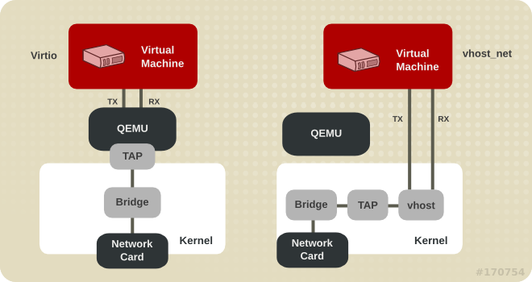

KVM 入门
Table of Contents
简介
KVM Kernel-based Virtual Machine ， 是基于 虚拟化扩展 ( Intel VT / AMD-V ) 的 X86 硬件，是 Linux 完全原生的全虚拟化解决方案
KVM 本身不执行任何模拟，需要用户空间应用程序 QEMU 通过 /dev/kvm 接口 设置 一个 客户机虚拟服务器的地址空间 ，向它 提供 模拟的 I/O，KVM 模块实现处理器的虚拟化和内存虚拟化
在硬件虚拟化技术的支持下，内核的 KVM 模块与 QEMU 的设备模拟协同工作，构成一套和物理计算机系统完全一致的虚拟化计算机软硬件系统
基础功能
CPU
在 QEMU/KVM 中，QEMU 提供对 CPU 的模拟，展现给客户机一定的 CPU 数目和 CPU 的特性。在 KVM 打开的情况下，客户机中 CPU 指令的执行由硬件处理器的虚拟化功能 (如 Intel VT-x 和 AMD AMD-V) 辅助执行，具有非常高的执行效率
在 KVM 环境中，每个客户机都是一个标准的 Linux 进程(QEMU 进程)，而每一个 vCPU 在宿主机中是 QEMU 进程派生的一个普通线程
在 Linux 中，一般进程有两种执行模式：内核模式和用户模式

而在 KVM 环境中，增加了第三条模式： 客户模式 。vCPU 在三种执行模式下的分工如下：
- 用户模式：主要处理 I/O 的模拟和管理，由 QEMU 的代码实现
内核模式：主要处理特别需要高性能和安全相关的指令
如处理客户模式到内核模式的转换 处理客户模式下的 I/O 指令或其它特权指令引起的 VM-Exit 处理影子内存管理 （shadow MMU）
客户模式：主要执行 Guest 中的大部分指令
I/O 和一些特权指令除外，它们会引起 VM-Exit，被 hypervisor 截获并模拟
内存
内存是一个非常重要的部件，它是与 CPU 沟通的一个桥梁
在通过 QEMU 命令行启动客户机时设置内存的参数是 -m :
-m megs # 设置客户机的内存为 megs MB 大小
EPT 和 VPID
EPT Extended Page Tables 扩展页表 ，属于 Intel 的第二代硬件虚拟化技术，它是针对内存管理单元 MMU 的 虚拟化扩展
如果只是一台物理服务器，这个物理地址就只为一个操作系统服务，但如果进行了虚拟化部署，有多个虚拟机时，就存在着稳定性的隐患 因为在进行 VM Entry（虚拟机进入）与 VM Exit（虚拟机退出）时（尤其是后者），都要对内存页进行修改 但物理内存是多个虚拟机共享的，因此不能让虚拟机直接访问物理地址，否则一个虚拟机出现内存错误，就会殃及整个物理服务器的运行
所以必须要采取虚拟地址，而 EPT 的作用就在于 加速 从 虚拟机地址 至 主机物理地址 的转换过程，节省传统软件处理方式的系统开销
VPID Virtual-Processor Identifiers 虚拟处理器标识 。是对现在的 CPUID 功能的一个强化
因为在每个 CPU 中都有一个 TLB，用来缓存逻辑地址到物理地址的转换表，而每个虚拟机都有自己的虚拟 CPU 来对应
所以，在进行迁移时要进行 TLB 的转存和清除。而 VPID 则会 跟踪 每个 虚拟 CPU 的 TLB ，当进行虚拟机迁移或 VM Entry 与 VM Exit 时，VMM可以 动态的分配 非零虚拟处理器的 ID 来迅速匹配（0 ID 给 VMM 自己使用），从而避免了 TLB 的转存与清除的操作，节省了系统开销，并提高了迁移速度，同时也降低对系统性能的影响
# grep -E 'ept|vpid' /proc/cpuinfo # 查看 cpu 是否支持相应特性 # cat /sys/module/kvm_intel/parameters/{ept,vpid} # 确认是否开启 ept 和 vpid Y Y
存储
QEMU 提供了对多种块存储设备的模拟，包括 IDE , SCSI , 软盘 , U盘 , virtio 磁盘 等。qemu-kvm 提供 -drive 参数来详细定义一个存储驱动器：
-drive option[,option[,option[,...]]]
Define a new drive. Valid options are:
file=file # 指定硬盘镜像,file=镜像文件名
if=interface # 指定驱动器使用的接口类型，如 ide, scsi, sd, mtd, floppy, pflash, virtio
snapshot=snapshot # 是否启动快照
snapshot is "on" or "off" and allows to enable snapshot for given drive.
Write to temporary files instead of disk image files. In this case, the
raw disk image you use is not written back. You can however force the
write back by pressing C-a s.
cache=cache # 设置宿主机对块设备数据访问中的 cache 情况
cache is "none", "writeback", "unsafe", or "writethrough" and
controls how the host cache is used to access block data.
format=format # 指定使用的磁盘格式
Specify which disk format will be used rather than detecting the format.
Can be used to specifiy format=raw to avoid interpreting an untrusted format
header.
... ...
cache 不同模式工作原理图：

writethrough 即 直写 模式，在调用 write 写入数据的同时将数据写入 磁盘缓存 和 后端块设备 才返回，缺点是 写入性能较低 ，但是 安全性高
qcow2 格式在使用 writethrough 时性能很差 KVM cache 默认使用 writethrough
writeback 即 回写 模式，在调用 write 写入数据时只将数据写入到 主机页缓存 中即返回，写入性能高，有安全风险
当使用 -snapshot 选项的时候， writeback cache 是默认项
- none 关闭缓存 ，直接从磁盘 IO 读写
- unsafe 这个选项告诉 QEMU 不需要写入任何数据到磁盘，只要保证在缓存即可
qemu-img
qemu-img 是 QEMU 的 磁盘管理工具 ，支持多种虚拟镜像格式
$ qemu-img -h | grep Supported Supported formats: raw cow qcow vdi vmdk cloop dmg bochs vpc vvfat qcow2 qed parallels nbd blkdebug host_cdrom host_floppy host_device file
qemu-img 默认创建的格式是 raw ，man 手册中对几种格式也都有介绍 以下为对 raw 和 qcow2 镜像的详细介绍
raw
原始的磁盘镜像格式，qemu-img 默认支持的格式
它的优势在于它非常简单而且非常容易移植到其他模拟器（emulator，QEMU 也是一个 emulator）上去使用 如果客户机文件系统（如 Linux 上的 ext2/ext3/ext4、Windows 的 NTFS）支持"空洞" （hole），那么镜像文件只有在被写有数据的扇区才会真正占用磁盘空间，从而有节省磁盘空间的作用 qemu-img 默认的 raw 格式的文件其实是稀疏文件（sparse file）「稀疏文件就是在文件中留有很多空余空间，留备将来插入数据使用 如果这些空余空间被 ASCII 码的 NULL 字符占据，并且这些空间相当大，那么这个文件就被称为稀疏文件，而且，并不分配相应的磁盘块」 dd 命令创建的也是 raw 格式，不过 dd 一开始就让镜像实际占用了分配的空间，而没有使用稀疏文件的方式对待空洞而节省磁盘空间 尽管一开始就实际占用磁盘空间的方式没有节省磁盘的效果，不过它在写入新的数据时不需要宿主机从现有磁盘空间中分配，从而在第一次写入数据时性能会比稀疏文件的方式更好一点
简单来说，raw 有以下几个特点：
- 寻址简单，访问效率高
可以通过格式转换工具方便地转换为其它格式
格式实现简单，不支持压缩、快照和加密
- 能够直接被宿主机挂载，不用开虚拟机即可在宿主和虚拟机间进行数据传输
qcow2
qcow2 是 qcow 的一种改进，是 QEMU 实现的一种虚拟机镜像格式。 更小的虚拟硬盘空间 （尤其是宿主分区不支持 hole 的情况下），支持 压缩 加密 ， 快照 功能， 磁盘读写性能较 raw 差
qemu-img 支持的命令
check
qemu-img check [-f fmt] filename
参数 -f fmt 是指定文件的格式，如果不指定格式 qemu-img 会自动检测
filename 是磁盘镜像文件的名称（包括路径）
对磁盘镜像文件进行一致性检查，查找镜像文件中的错误，目前仅支持对 qcow2 , qed , vdi 格式文件的检查。其中:
- qcow2 是 QEMU 0.8.3 版本引入的镜像文件格式，也是目前使用最广泛的格式
- qed （QEMU enhanced disk）是从 QEMU 0.14 版开始加入的增强磁盘文件格式，为了避免 qcow2 格式的一些缺点，也为了提高性能，不过目前还不够成熟
- vdi （Virtual Disk Image）是 Oracle 的 VirtualBox 虚拟机中的存储格式
$ qemu-img check CentOS6.4-x86_64.qcow2 No errors were found on the image.
create
qemu-img create [-f fmt] filename [size]
创建一个格式为 fmt 大小为 size 文件名为 filename 的镜像文件：
$ qemu-img create -f qcow2 test.qcow2 10G Formatting 'test.qcow2', fmt=qcow2 size=10737418240 encryption=off cluster_size=65536 $ qemu-img create -f qcow2 test.raw 10G Formatting 'test.raw', fmt=qcow2 size=10737418240 encryption=off cluster_size=65536
注意 ：这里的 qcow2 后缀只是为了便于自己区分格式方便 如果不加后缀也可以通过 qemu-img 来获取镜像的格式
info
qemu-img info [-f fmt] filename
显示 filename 镜像文件的信息：
- 如果文件是使用稀疏文件的存储方式，也会显示出它的本来分配的大小以及实际已占用的磁盘空间大小
- 如果文件中存放有客户机快照，快照的信息也会被显示出来
$ qemu-img info test.qcow2 image: test.qcow2 file format: qcow2 virtual size: 10G (10737418240 bytes) disk size: 136K cluster_size: 65536 $ qemu-img info test.raw # qemu-img 生成 raw 格式镜像也是采用稀疏文件方式存储的 image: test.raw file format: qcow2 virtual size: 10G (10737418240 bytes) disk size: 136K cluster_size: 65536 $ dd </dev/zero >test.dd bs=1MB count=1000 1000+0 records in 1000+0 records out 1000000000 bytes (1.0 GB) copied, 1.80597 s, 554 MB/s $ qemu-img info test.dd # 可以看到 dd 产生的格式也是 raw 格式的，并且没有用到稀疏存储方式 image: test.dd file format: raw virtual size: 954M (1000000000 bytes) disk size: 954M
convert
qemu-img convert [-c] [-f fmt] [-O output_fmt] [-o options] filename [filename2 […]] output_filename
镜像格式转换，将 fmt 格式的 filename 镜像文件根据 options 选项转换为格式为 output_fmt 的名为 output_filename 的镜像文件
它支持不同格式的镜像文件之间的转换，比如可以用 VMware 用的 vmdk 格式文件转换为 qcow2 文件 这对从其他虚拟化方案转移到 KVM 上的用户非常有用
- 一般来说，输入文件格式 fmt 由 qemu-img 工具自动检测到，而输出文件格式 output_fmt 根据自己需要来指定，默认会被转换为与 raw 文件格式（且默认使用稀疏文件的方式存储以节省存储空间）
- -c 参数是对输出的镜像文件进行压缩，不过只有 qcow2 和 qcow 格式的镜像文件才支持压缩，而且这种压缩是只读的，如果压缩的扇区被重写，则会被重写为未压缩的数据
- 同样可以使用 -o options 来指定各种选项，如：后端镜像、文件大小、是否加密等等
- 使用 backing_file 选项来指定后端镜像，让生成的文件是 copy-on-write 的增量文件，这时必须让转换命令中指定的后端镜像与输入文件的后端镜像的内容是相同的，尽管它们各自后端镜像的目录、格式可能不同
$ qemu-img info test.dd image: test.dd file format: raw virtual size: 954M (1000000000 bytes) disk size: 954M $ qemu-img convert -O qcow2 test.dd test_qcow2.qcow2 $ qemu-img info test_qcow2.qcow2 image: test_qcow2.qcow2 file format: qcow2 virtual size: 954M (1000000000 bytes) disk size: 136K cluster_size: 65536
如果使用 qcow2 、 qcow 、 cow 等作为输出文件格式来转换 raw 格式的镜像文件（非稀疏文件格式） 镜像转换还可以起到将镜像文件转化为更小的镜像，因为它可以将空的扇区删除使之在生成的输出文件中并不存在
网络
QEMU 支持的网络模式
- 基于 网桥 的虚拟网卡
- 基于 NAT 的虚拟网络
- QEMU 内置的 用户模式 网络
- 直接分配 网络设备 的网络 VT-d 和 SR-IOV
qemu-kvm 通过 -net 参数配置网络选项：
-net nic[,vlan=n][,macaddr=mac][,model=type][,name=name][,addr=addr][,vectors=v]
Create a new Network Interface Card and connect it to VLAN n (n = 0 is
the default). The NIC is an rtl8139 by default on the PC target.
Optionally, the MAC address can be changed to mac, the device address
set to addr (PCI cards only), and a name can be assigned for use in
monitor commands. Optionally, for PCI cards, you can specify the
number v of MSI-X vectors that the card should have; this option
currently only affects virtio cards; set v = 0 to disable MSI-X. If no
-net option is specified, a single NIC is created. Qemu can emulate
several different models of network card. Valid values for type are
"virtio", "i82551", "i82557b", "i82559er", "ne2k_pci", "ne2k_isa",
"pcnet", "rtl8139", "e1000", "smc91c111", "lance" and "mcf_fec". Not
all devices are supported on all targets. Use -net nic,model=? for a
list of available devices for your target.
- -net nic 必需的参数，表明是一个网卡的配置
- vlan=n 表示将网卡放入到编号为 n 的 VLAN，默认为 0
- macaddr=mac 自定义 MAC 地址
- model=type 设置模拟的网卡类型，默认为 rtl8139
如果提供 VM 多个网卡，则需要多次使用 -net 参数
桥接网络
手动桥接：qemu-kvm安装或者启动虚拟系统的时候如果需要和外界通信，那么就要设置网络桥接：
/usr/libexec/qemu-kvm -m 1024 \ -drive file=/data/images/CentOS6_4.qcow2,if=virtio \ -net nic,model=virtio -net tap,script=no -nographic -vnc :0
使用 -net tap,script=no 方式启动之后，系统会生成 tapX 的虚拟网卡,默认是 DOWN 状态：
$ ip link show dev tap0 37: tap0: <BROADCAST,MULTICAST> mtu 1500 qdisc noop state DOWN qlen 500 link/ether d2:b0:af:7b:23:0f brd ff:ff:ff:ff:ff:ff
如果想和外界通信，可以手动执行生效，先查询当前与 br0 桥接的设备，并没有 tap 相关的网卡：
$ brctl show br0 bridge name bridge id STP enabled interfaces br0 8000.b8975a626020 no eth0 vnet0 vnet1
需要把 tap0 也桥接到 br0 下以便和外界通信，方法如下:
$ ip link set tap0 up # 使 tap0 状态变为 up $ brctl addif br0 tap0 # 桥接 tap0 到 br0 $ brctl show br0 bridge name bridge id STP enabled interfaces br0 8000.b8975a626020 no eth0 tap0 vnet0 vnet1
brctl delif br0 tap0 删除桥接网络
qemu-kvm 工具在客户机关闭时会自动解除 TAP 设备的 bridge 绑定，所以这一步无需操作
脚本实现
$ /usr/libexec/qemu-kvm -m 1024 \ -drive file=/data/images/CentOS6_4.qcow2,if=virtio \ -net nic,model=virtio -net tap,script=/tmp/qemu-ifup.sh -nographic -vnc :0
tap,script=/tmp/qemu-ifup.sh 指定 script 网络配置启动前启动脚本：
# cat /tmp/qemu-ifup.sh #!/bin/bash # 桥接网络设备 switch=br0 if [ -n $1 ]; then # $1 为 qemu-kvm 传递值，这里是 tap ip link set $1 up brctl addif ${switch} $1 exit 0 else echo "no interface!" exit 1 fi
高级功能
半虚拟驱动
virtio
KVM 是必须使用硬件虚拟化辅助技术（如 Intel VT-x、AMD-V）的 hypervisor，在 CPU 运行效率方面有硬件支持，其效率是比较高的 在有 Intel EPT 特性支持的平台上，内存虚拟化的效率也较高 QEMU/KVM 提供了全虚拟化环境，可以让客户机不经过任何修改就能运行在 KVM 环境中 不过，KVM 在 I/O 虚拟化方面，传统的方式是使用 QEMU 纯软件的方式来模拟 I/O 设备（如模拟的网卡、磁盘、显卡等等），其效率并不非常高
在 KVM 中，可以在客户机中使用 半虚拟化驱动 （Paravirtualized Drivers， PV Drivers ）来提高客户机的性能（特别是 I/O 性能 ）。目前，KVM 中实现半虚拟化驱动的方式是采用了 virtio 这个 Linux 上的设备驱动标准框架
QEMU 模拟 I/O 设备
使用 QEMU 模拟 I/O 的情况下，当客户机中的设备驱动程序（device driver）发起 I/O 操作请求之时：
- KVM 模块中的 I/O 操作捕获代码会拦截这次 I/O 请求，然后经过处理后将本次 I/O 请求的信息存放到 I/O 共享页，并通知用户控件的 QEMU 程序
- QEMU 模拟程序获得 I/O 操作的具体信息之后，交由硬件模拟代码来模拟出本次的 I/O 操作，完成之后，将结果放回到 I/O 共享页，并通知 KVM 模块中的 I/O 操作捕获代码
- 最后，由 KVM 模块中的捕获代码读取 I/O 共享页中的操作结果，并把结果返回到客户机中
当然，这个操作过程中客户机作为一个 QEMU 进程在等待I/O时也可能被阻塞 另外，当客户机通过 DMA（Direct Memory Access）访问大块 I/O 之时，QEMU 模拟程序将不会把操作结果放到 I/O 共享页中，而是通过内存映射的方式将结果直接写到客户机的内存中去，然后通过 KVM 模块告诉客户机 DMA 操作已经完成

QEMU 模拟 I/O 设备的方式：
优点：可以通过软件模拟出各种各样的硬件设备，包括一些不常用的或者很老很经典的设备（如 RTL8139 网卡），而且它不用修改客户机操作系统，就可以实现模拟设备在客户机中正常工作
在 KVM 客户机中使用这种方式，对于解决手上没有足够设备的软件开发及调试有非常大的好处
- 缺点是，每次 I/O 操作的路径比较长，有较多的 VMEntry、VMExit 发生，需要多次上下文切换（context switch），也需要多次数据复制，所以它的性能较差
virtio 的基本原理和优缺点
virtio 是一个在 hypervisor 之上的 抽象 API 接口 ，让客户机知道自己运行在虚拟化环境中，从而与 hypervisor 根据 virtio 标准协作，从而在客户机中达到更好的性能（特别是 I/O 性能）。其中：
- 前端驱动（frondend，如 virtio-blk , virtio-net 等）是在 客户机 中存在的驱动程序模块
- 后端处理程序（backend）是在 QEMU 中实现的
- 在这前后端驱动之间，还定义了两层来支持客户机与 QEMU 之间的通信。其中
virtio 这一层是 虚拟队列接口 ，它在概念上将 前端驱动程序 附加 到 后端处理程序
一个前端驱动程序可以使用 0 个或多个队列，具体数量取决于需求 例如，virtio-net 网络驱动程序使用两个虚拟队列（一个用于接收，另一个用于发送），而 virtio-blk 块驱动程序仅使用一个虚拟队列 虚拟队列实际上被实现为跨越客户机操作系统和 hypervisor 的衔接点，但它可以通过任意方式实现，前提是客户机操作系统和 virtio 后端程序都遵循一定的标准，以相互匹配的方式实现它
virtio-ring 实现了 环形缓冲区 （ ring buffer ），用于 保存 前端驱动和后端处理程序 执行的信息 ，并且它可以 一次性 保存前端驱动的 多次 I/O 请求 ，并且交由后端驱动去 批量处理 ，最后实际调用 宿主机 中 设备驱动 实现物理上的 I/O 操作
这样做就可以根据约定实现批量处理而不是客户机中每次 I/O 请求都需要处理一次，从而提高客户机与 hypervisor 信息交换的效率

virtio 半虚拟化驱动的方式：
优点是可以获得很好的 I/O 性能，其性能几乎可以达到和 native（即：非虚拟化环境中的原生系统）差不多的 I/O 性能
所以，在使用 KVM 之时，如果宿主机内核和客户机都支持 virtio 的情况下，一般推荐使用 virtio 达到更好的性能
缺点，它必须要客户机安装特定的Virtio驱动使其知道是运行在虚拟化环境中，且按照 Virtio 的规定格式进行数据传输
不过客户机中可能有一些老的 Linux 系统不支持 virtio 和主流的Windows系统需要安装特定的驱动才支持 Virtio 较新的一些 Linux 发行版（如 RHEL 6.x、Fedora 17 等）默认都将 virtio 相关驱动编译为模块，可直接作为客户机使用 virtio Windows 系统需要额外的安装相应的 virtio 区别，virtio-win
virtio_net 和 vhost_net

- 使用 virtio_net 半虚拟化驱动，可以提高网络吞吐量和降低网络延迟
- vhost_net 能够把网络 IO 请求的后端处理在 内核空间 完成，则效率更高，会提高网络吞吐量和减少网络延迟。
virtio_blk
virtio_blk 驱动使用 virtio API 为客户机提供了一个高效访问块设备 I/O 的方法。使用 virtio_blk 驱动的磁盘显示为 /dev/vd*
Device Assignment and SR-IOV

热插拔
热插拔可以提高服务器扩展性、灵活性以及对相关硬件问题的及时恢复能力
在服务器中，可以实现热插拔的部件主要是 SATA 硬盘、CPU、内存、USB、网卡、风扇等
在 KVM 虚拟化环境中，也支持客户机相应的设备热插拔。目前，KVM 对热插拔的支持还不是很完善，主要支持 PCI 设备和 CPU 的热插拔，内存的热插拔目前还不是很完善
动态迁移
动态迁移：也叫在线迁移。就是在保证虚拟机上服务正常运行的同时，将一个虚拟机系统从一个物理主机移动到另一个物理主机的过程
该过程不会对最终用户造成明显的影响，从而使得管理员能够在不影响用户正常使用的情况下，对物理服务器进行离线维修或者升级 与静态迁移不同的是，为了保证迁移过程中虚拟机服务的可用，迁移过程仅有非常短暂的停机时间
迁移的前面阶段，服务在源主机的虚拟机上运行，当迁移进行到一定阶段，目的主机已经具备了运行虚拟机系统的必须资源，经过一个非常短暂的切换，源主机将控制权转移到目的主机，虚拟机系统在目的主机上继续运行。对于虚拟机服务本身而言，由于切换的时间非常短暂，用户感觉不到服务的中断，因而迁移过程对用户是透明的
动态迁移适用于对虚拟机服务可用性要求很高的场合，KVM 虚拟机在物理主机之间迁移的实现
管理工具

libvirt
libvirt 是目前使用最为广泛的对 KVM 虚拟机进行管理的 工具 和 应用程序接口 （ API ），而且一些常用的虚拟机管理工具（如 virsh , virt-install , virt-manager 等）和云计算框架平台（如 OpenStack , OpenNebula , Eucalyptus 等）都在底层使用 libvirt 的应用程序接口。libvirt 是为了更方便地管理平台虚拟化技术而设计的开放源代码的应用程序接口、守护进程和管理工具，它不仅提供了对虚拟化客户机的管理，也提供了对虚拟化网络和存储的管理
尽管 libvirt 项目最初是为 Xen 设计的一套API，但是目前对KVM等其他 Hypervisor 的支持也非常的好 libvirt 支持多种虚拟化方案，既支持包括 KVM、QEMU、Xen、VMware、VirtualBox 等在内的平台虚拟化方案 又支持 OpenVZ、LXC 等 Linux 容器虚拟化系统，还支持用户态 Linux（UML）的虚拟化
libvirt 作为中间适配层，让底层 Hypervisor 对上层用户空间的管理工具是可以做到完全透明的，因为 libvirt 屏蔽 了底层 各种 Hypervisor 的细节 ，为上层管理工具提供了一个统一的、较稳定的接口（API）。通过 libvirt，一些用户空间管理工具可以管理各种不同的 Hypervisor 和上面运行的客户机
libvirt 的管理功能主要包含如下五个部分：
- 域的管理：包括
对 节点上的域 的 各个生命周期 的管理
如：启动、停止、暂停、保存、恢复和动态迁移
对 多种设备类型 的 热插拔 操作
包括：磁盘、网卡、内存和 CPU，当然不同的 Hypervisor 上对这些热插拔的支持程度有所不同
远程节点的管理：只要物理节点上运行了 libvirtd 这个守护进程， 远程的管理程序 就可以 连接 到 该节点进程管理操作 ，经过 认证 和 授权 之后，所有的 libvirt 功能都可以被访问和使用
libvirt 支持多种网络远程传输类型，如 SSH、TCP 套接字、Unix domain socket、支持 TLS 的加密传输等 假设使用最简单的 SSH，则不需要额外配置工作，比如：example.com 节点上运行了 libvirtd，而且允许 SSH 访问 在远程的某台管理机器上就可以用如下的命令行来连接到 example.com 上 virsh -c qemu+ssh://root@example.com/system ，从而管理其上的域
存储的管理：任何运行了 libvirtd 守护进程的主机，都可以通过 libvirt 来管理 不同类型的存储
如：创建不同格式的客户机镜像（qcow2、raw、qde、vmdk等）、挂载 NFS 共享存储系统、查看现有的 LVM 卷组、创建新的 LVM 卷组和逻辑卷、对磁盘设备分区、挂载 iSCSI 共享存储，等等 当然 libvirt 中，对存储的管理也是支持远程管理的
网络的管理：任何运行了 libvirtd 守护进程的主机，都可以通过libvirt来管理物理的和逻辑的 网络接口
包括：列出现有的网络接口卡，配置网络接口，创建虚拟网络接口，网络接口的桥接，VLAN 管理，NAT 网络设置，为客户机分配虚拟网络接口 ......
- 提供一个稳定、可靠、高效的应用程序接口 API 以便可以完成前面的 4 个管理功能
libvirt 主要由三个部分组成，它们分别是：
- 应用程序编程接口 API 库：为了其他虚拟机管理工具（如 virsh、virt-manager等）提供虚拟机管理的程序库支持
- 一个 守护进程 libvirtd ：负责执行对节点上的域的管理工作，在用各种工具对虚拟机进行管理之时，这个守护进程一定要处于运行状态中，而且这个守护进程可以分为两种：
- 一种是 root 权限的libvirtd，其权限较大，可以做所有支持的管理工作
- 一种是普通用户权限的 libvirtd，只能做比较受限的管理工作
- 一个默认 命令行管理工具 virsh